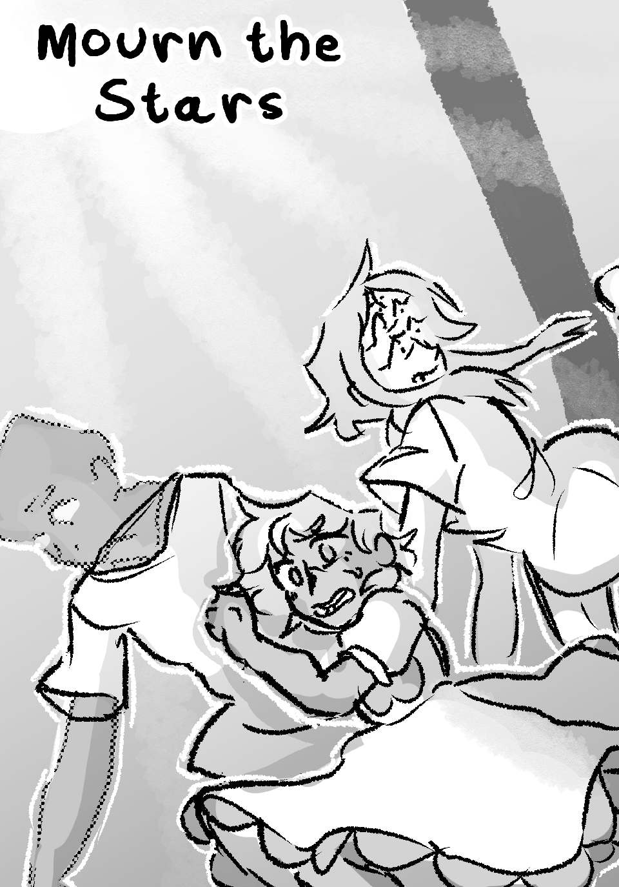

Sketchy Jessie
Completed or ongoing projects of mine, usually comics.

[Site] - [Tapas] - [Fables]
Mourn the Stars
Mourn the Stars is a tragedy webcomic about three experiments struggling to survive in a dying world.[Site] - [Tapas] - [Fables]